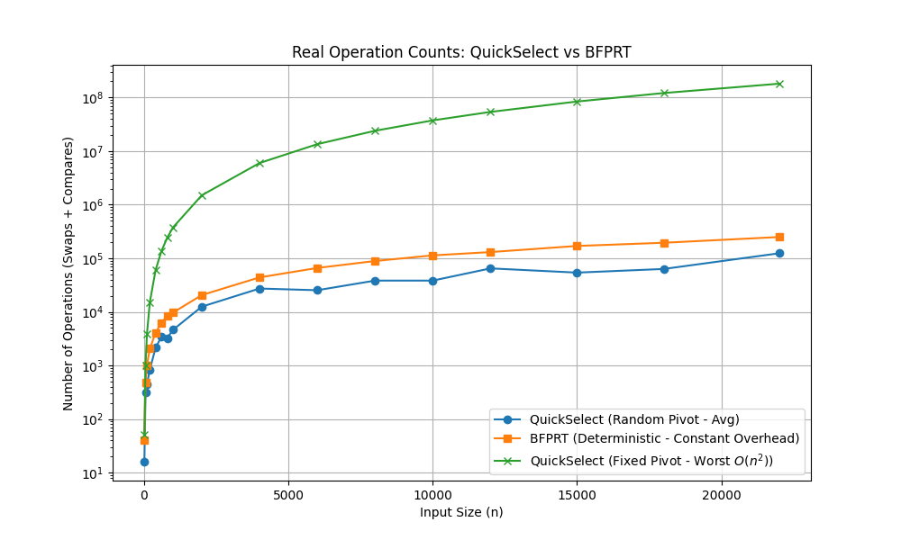

median-algorithm
中位数以及k位数选取的算法
- 中位数
- 众数
- 归并有序序列
- k位数
引子-众数
给出一个严格的众数的定义：众数是严格大于 n/2 的数字
在这个定义下，众数就是中位数
怎么计算 Maj 呢？一个比较经典的算法就是摩尔投票法
当一个数字满足众数的时候，如果这时从数组里消去一对不同的数字，有两种情况：
- 众数不在这两个数里，消去之后的数组的众数不变
- 众数在这两个数里，推出，众数仍然不变
这是一种经典的***减而治之(decrease and conquer)***的算法
按照这个思想可以在遍历的一遍中让所有元素都”投票“一次，找到最终的众数
1 | ALGORITHM FindMajority(A): |
归并两个有序序列
decrease and conquer
按照这个减而治之的思想，假如有两个有序序列，怎么找到他们合并后的中位数？
可以先找到分别的中位数，
- 如果两者相等，就已经找到了中位数
- 两者不等，则根据两者的大小关系，可以确定是在 A 的右半 + B的左半 / A 的左半 + B的右半，这样再减而治之的递归
这样得到的时间复杂度
即为
leetcode
其实这道题在leetcode里做过一次，当时是要求用的时间，也就是只遍历一遍长度更小的数组，得到中位数
这里的精髓在于确定了中位数在A中的位置i，就能确定B中中位数的位置j，因为满足
所以只需要检验每一次的位置是不是中位数的位置，也就是，最终的结果会在四个边界值中产生
二分切割
有了刚刚的思路之后，其实可以将上面两个融合一下，不再使用对半分来更新查找的区域，而是使用二分查找，在更短的序列中找到一个位置，使它对应的能够满足条件即可
这样的复杂度只有$$O(log(min(m,n)))$，而且这样感觉代码要考虑的边界比第一种要少，因为第一种选取左/右区间的时候会造成长度不等的情况，需要考虑怎么处理
1. 快速选择 (Quickselect)
核心思想： 减治法 (Decrease and Conquer)。
快速选择的目标是从无序数组中找到第 小的元素。它利用了快速排序中的 Partition (分区) 操作，但不同于快排的双侧递归，它仅进入包含目标元素的一侧，所以不会“还原”成一个二叉树，而是退化到一个线性的复杂度
执行流程
- Pivot Selection：随机或选取首尾元素作为基准值。
- Partitioning：将数组划分为三个逻辑区域：
- Q (Smaller)：小于基准值。
- L (Equal)：等于基准值。
- G (Greater)：大于基准值。
- Branching：根据 与分区边界的关系，决定是直接返回基准值，还是递归进入 Q 区或 G 区。
时间复杂度计算
-
平均情况：假设每次分区都能平分数组。
利用等比数列展开：。因此平均复杂度为 。
-
最坏情况：基准值始终选到极值，导致每次只排除一个元素。
这是一个等差数列求和：。因此最坏复杂度为 。
2. BFPRT 算法 (中位数的中位数)
核心思想： 确定性基准值筛选。
BFPRT 解决了普通快速选择在最坏情况下退化的问题，通过一系列预处理，从理论上保证了分区平衡性
本质上就是避免在quickselect中选取了一个极值的pivot，为此先进行了一次类 median 的
执行流程
- 分组：将 个元素每 5 个分为一组。
- 局部中位数：对每组进行排序，取出该组的中位数。
- 递归找基准：对这 个中位数递归调用 BFPRT，找到其中的中位数，记为 。
- 分区：使用 作为基准值进行三向切分 (Three-way Partition)。
时间复杂度计算
BFPRT 的复杂度由三部分组成：
- ：分组及找局部中位数的线性开销。
- ：递归寻找中位数的中位数的代价。
- ：在最坏情况下，剩余待处理子问题的规模。
为什么是 ？
在所有中位数中，有 的中位数比 小。而这些组中又有 3 个元素（包括中位数本身）小于或等于其组内中位数。
因此，至少有 的元素保证不大于 。同理，至少有 的元素不小于 。最坏情况只需处理剩下的 。
最终递推式：
由于 ，该递归树是收敛的，最终证明 。
3. 对比与权衡

其实实际上 quickselect 的使用比 BRPRT 更常见，因为虽然后者保证最坏的情况仍然是线性的，但是在随机情况下引入的额外计算的overhead实际上会带来负效益
| 特性 | 快速选择 (Quickselect) | BFPRT 算法 |
|---|---|---|
| 理论最坏复杂度 | ||
| 实际运行常数 | 极小 (约为 ) | 较大 (约为 - ) |
| 访存特征 | Cache Friendly (顺序访存) | Cache Miss 较高 (逻辑跳转多) |
| 实现难度 | 简单 | 复杂 |
| 典型应用 | std::nth_element (结合 Introselect) |
算法理论研究、安全敏感型任务 |
为什么 Quickselect 更常用？
- 访存局部性 (Memory Locality)：快速选择的线性扫描极大地利用了 CPU L1/L2 缓存。BFPRT 的分组和二次提取操作破坏了空间局部性。
- 分支预测 (Branch Prediction)：Quickselect 逻辑单一，现代 CPU 分支预测准确率高；BFPRT 的多重递归和分组逻辑易导致流水线停顿。
- 概率论保证：随机化基准选择在实践中触发 的概率极低，远小于硬件故障的概率